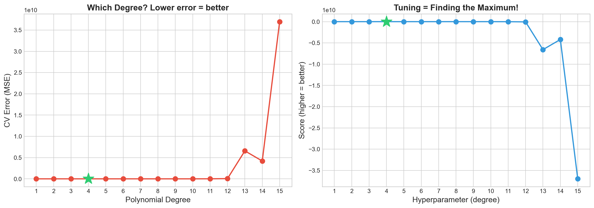
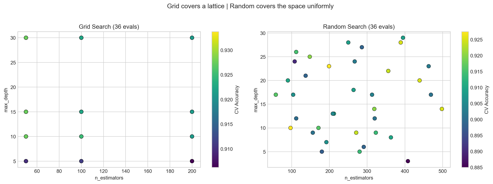
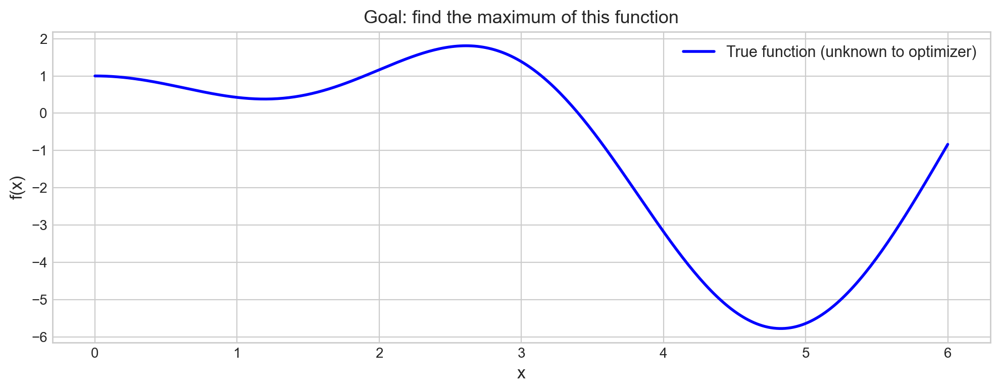
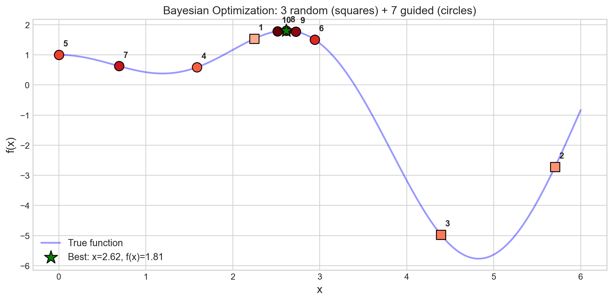
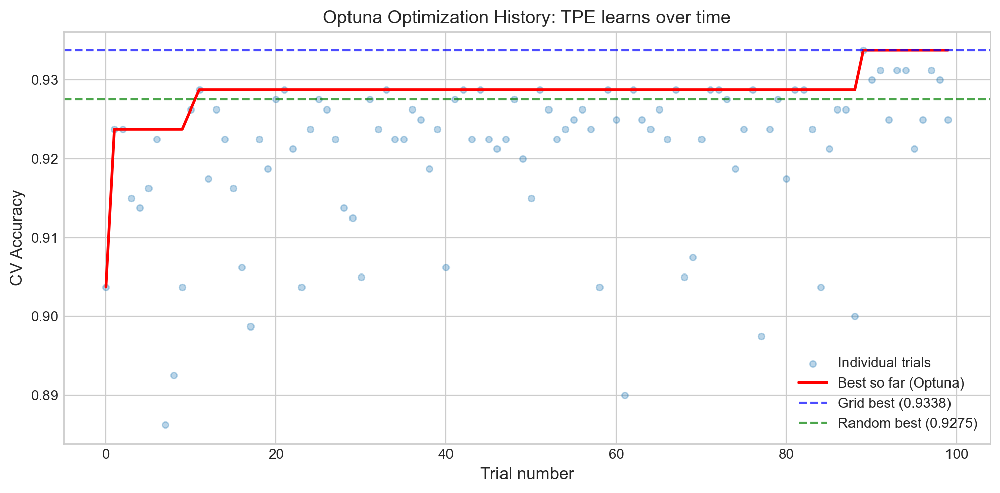
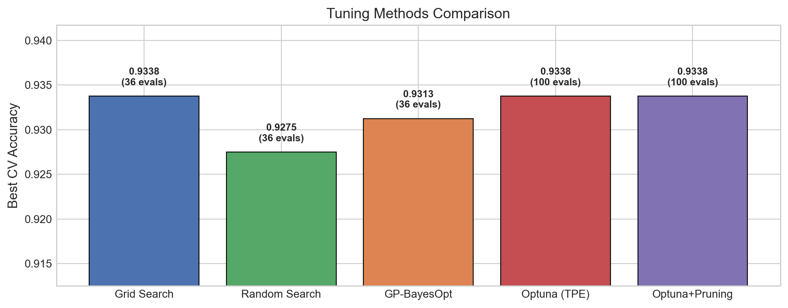
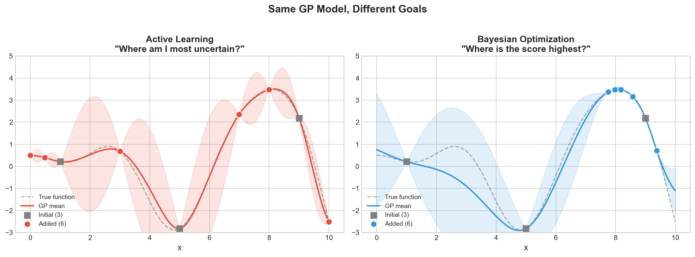

# Install dependencies (uncomment if needed)
# !pip install numpy matplotlib scikit-learn optuna bayesian-optimization torch trackioWeek 8: Hyperparameter Tuning & Experiment Tracking
CS 203 – Software Tools and Techniques for AI
Prof. Nipun Batra, IIT Gandhinagar
Previously on CS 203…
In Week 7, we learned how to evaluate machine learning models properly: train/test splits, cross-validation, stratification, and picking the right metric for the job.
But evaluation answers the question “How good is this model?” – it doesn’t tell us “How do I make it better?”
Every ML model has hyperparameters – knobs you set before training: - How many trees in a Random Forest? - What learning rate for a neural network? - How much regularization?
Think of it like baking a cake. The oven temperature is like the learning_rate – too hot and you burn the cake (overfitting), too cold and it’s raw (underfitting). The amount of sugar is like n_estimators – more isn’t always better, and you need to find the right amount. You wouldn’t bake 100 cakes to find the perfect recipe by trial and error – you’d want a systematic approach.
Tuning these by hand is tedious and error-prone. This week, we learn systematic approaches to hyperparameter tuning, and how to track our experiments so we never lose a result.
Lecture Slide: See the opening slides for motivation on why manual tuning doesn’t scale.
Notebook Outline (matches lecture slide order):
| Part | Topic |
|---|---|
| 0 | Setup + Dataset |
| 0b | Motivating Example: Which Polynomial Degree? |
| 1 | Grid Search vs Random Search |
| 2 | Bayesian Optimization (GP viz, Optuna TPE, pruning, AL vs BayesOpt) |
| 3 | Experiment Tracking with Trackio (multiple experiments, dashboard, alerts) |
| 4 | PyTorch Reproducibility |
| 5 | (Optional) Nested Cross-Validation |
| 6 | DIY AutoML (6 model families, pure sklearn) |
| 7 | Optuna for Neural Networks |
| Summary + What’s Next |
Flow: Parts 1-2 find the best → Part 3 tracks the chaos → Part 4 reproduces the best → Parts 5-7 automate it all.
Part 0: Setup + Dataset
We start by importing everything we need and creating a synthetic classification dataset that we will use throughout the notebook. Using a synthetic dataset is intentional: it lets us focus on the tuning process rather than data cleaning.
Note: Week 7 used a custom 4-feature student dataset for evaluation demos. This week we use sklearn’s make_classification with 10 features — more realistic for tuning experiments where we need a harder problem.
import numpy as np
import matplotlib.pyplot as plt
from sklearn.datasets import make_classification, load_digits
from sklearn.ensemble import (
RandomForestClassifier, GradientBoostingClassifier,
AdaBoostClassifier, ExtraTreesClassifier
)
from sklearn.linear_model import LogisticRegression
from sklearn.svm import SVC
from sklearn.neighbors import KNeighborsClassifier
from sklearn.dummy import DummyClassifier
from sklearn.preprocessing import StandardScaler
from sklearn.pipeline import Pipeline
from sklearn.model_selection import (
train_test_split, cross_val_score, GridSearchCV,
RandomizedSearchCV, StratifiedKFold
)
from sklearn.metrics import accuracy_score
from scipy.stats import randint, uniform
import time
import warnings
warnings.filterwarnings("ignore")
plt.style.use("seaborn-v0_8-whitegrid")
np.random.seed(42)
%config InlineBackend.figure_format = 'retina'# ---- Synthetic dataset (used throughout) ----
X, y = make_classification(
n_samples=1000, n_features=10, n_informative=5,
n_redundant=2, n_classes=2, random_state=42
)
X_train, X_test, y_train, y_test = train_test_split(
X, y, test_size=0.2, stratify=y, random_state=42
)
print(f"Dataset : {X.shape[0]} samples, {X.shape[1]} features")
print(f"Train : {X_train.shape[0]} | Test: {X_test.shape[0]}")
print(f"Class balance: {y.mean():.1%} positive")Dataset : 1000 samples, 10 features
Train : 800 | Test: 200
Class balance: 50.3% positiveWe have 1000 samples with 10 features (5 informative, 2 redundant, 3 noise). The 80/20 split gives us 800 training and 200 test samples, with stratification to preserve class balance.
Now let’s see how different tuning strategies find the best hyperparameters for this data.
Part 0b: Motivating Example – Which Polynomial Degree?
Before we jump into tuning Random Forests, let’s see the problem in its simplest form.
Fitting a polynomial to data requires choosing the degree – that’s a hyperparameter! Too low -> underfitting. Too high -> overfitting. How do we find the sweet spot?
Back to our cake analogy: choosing the polynomial degree is like choosing how many layers your cake has. One layer is too simple, ten layers will collapse – somewhere in between is just right. The question is: how do we find that number without baking every possible cake?
Lecture Slide: See the “Motivating Example: Which Polynomial Degree?” slide.
# Motivating example: which polynomial degree is best?
from sklearn.preprocessing import PolynomialFeatures
from sklearn.linear_model import LinearRegression
from sklearn.pipeline import make_pipeline
# Generate simple 1D data
np.random.seed(42)
n_poly = 40
X_poly = np.sort(np.random.uniform(0, 6, n_poly)).reshape(-1, 1)
y_poly = np.sin(X_poly.ravel()) * X_poly.ravel() + np.random.normal(0, 0.5, n_poly)
# Try degrees 1-15, evaluate each with CV
degrees = range(1, 16)
cv_errors = []
for d in degrees:
pipe = make_pipeline(PolynomialFeatures(d), LinearRegression())
scores = cross_val_score(pipe, X_poly, y_poly, cv=5, scoring='neg_mean_squared_error')
cv_errors.append(-scores.mean())
# Plot: which degree is best?
fig, (ax1, ax2) = plt.subplots(1, 2, figsize=(14, 5))
# Left: CV error
ax1.plot(list(degrees), cv_errors, 'o-', color='#e74c3c', linewidth=2, markersize=8)
best_deg = np.argmin(cv_errors) + 1
ax1.plot(best_deg, cv_errors[best_deg-1], '*', color='#2ecc71', markersize=20, zorder=5)
ax1.set_xlabel('Polynomial Degree', fontsize=13)
ax1.set_ylabel('CV Error (MSE)', fontsize=13)
ax1.set_title('Which Degree? Lower error = better', fontsize=14, fontweight='bold')
ax1.set_xticks(list(degrees))
# Right: flip it — now it's a maximization problem!
neg_errors = [-e for e in cv_errors]
ax2.plot(list(degrees), neg_errors, 'o-', color='#3498db', linewidth=2, markersize=8)
ax2.plot(best_deg, neg_errors[best_deg-1], '*', color='#2ecc71', markersize=20, zorder=5)
ax2.set_xlabel('Hyperparameter (degree)', fontsize=13)
ax2.set_ylabel('Score (higher = better)', fontsize=13)
ax2.set_title('Tuning = Finding the Maximum!', fontsize=14, fontweight='bold')
ax2.set_xticks(list(degrees))
plt.tight_layout()
plt.show()
print(f"\nBest degree: {best_deg} (CV error = {cv_errors[best_deg-1]:.3f})")
print("Key insight: Hyperparameter tuning = finding the peak of an unknown, expensive function!")
Best degree: 4 (CV error = 2.238)
Key insight: Hyperparameter tuning = finding the peak of an unknown, expensive function!Part 1: Grid Search vs Random Search
The simplest approaches to hyperparameter tuning: try a bunch of combinations and pick the best. But how you pick those combinations matters a lot.
Analogy: Shopping for the best deal. Grid Search is like checking every single item on every shelf in the store – thorough, but exhausting. Random Search is like randomly grabbing items off different shelves – you cover more ground in less time, and you might stumble on a great deal that Grid Search’s rigid aisle-by-aisle approach would miss.
Lecture Slide: See Part 1 of the lecture for the theory behind grid vs random search, including the Bergstra & Bengio (2012) argument for why random search is usually better.
1a. Manual Grid Search (the for-loop way)
Before using sklearn’s GridSearchCV, let’s see what it does under the hood. This makes it clear that grid search is just nested for-loops + cross-validation.
# Manual grid search with nested for loops
from itertools import product
n_estimators_list = [50, 100, 200]
max_depth_list = [5, 10, 15, None]
min_samples_leaf_list = [1, 2, 5]
best_score = -1
best_params = None
all_results = []
total = len(n_estimators_list) * len(max_depth_list) * len(min_samples_leaf_list)
print(f"Total combinations: {total}")
print(f"With 5-fold CV, that's {total * 5} model fits!\n")
t0 = time.time()
ct = 0
for n_est, depth, leaf in product(n_estimators_list, max_depth_list, min_samples_leaf_list):
ct += 1
model = RandomForestClassifier(
n_estimators=n_est, max_depth=depth,
min_samples_leaf=leaf, random_state=42
)
scores = cross_val_score(model, X_train, y_train, cv=5, scoring='accuracy')
mean_score = scores.mean()
all_results.append({
'n_estimators': n_est, 'max_depth': depth,
'min_samples_leaf': leaf, 'score': mean_score
})
if mean_score > best_score:
best_score = mean_score
best_params = {'n_estimators': n_est, 'max_depth': depth, 'min_samples_leaf': leaf}
print(f"Evaluating grid point {ct}/{total}: n_estimators={n_est}, max_depth={depth}, min_samples_leaf={leaf} ...")
print(f" CV scores: {scores}, mean={mean_score:.4f}")
print("-"*50)
elapsed = time.time() - t0
print(f"Manual Grid Search ({elapsed:.1f}s)")
print(f"Best CV score : {best_score:.4f}")
print(f"Best params : {best_params}")
print(f"\nProblem: adding one more hyperparameter multiplies the combos!")
print(f" 3 x 4 x 3 = {total} --> 3 x 4 x 3 x 5 = {total * 5} (curse of dimensionality)")Total combinations: 36
With 5-fold CV, that's 180 model fits!
Evaluating grid point 1/36: n_estimators=50, max_depth=5, min_samples_leaf=1 ...
CV scores: [0.95 0.8875 0.925 0.9125 0.94375], mean=0.9238
--------------------------------------------------
Evaluating grid point 2/36: n_estimators=50, max_depth=5, min_samples_leaf=2 ...
CV scores: [0.95625 0.86875 0.91875 0.91875 0.9375 ], mean=0.9200
--------------------------------------------------
Evaluating grid point 3/36: n_estimators=50, max_depth=5, min_samples_leaf=5 ...
CV scores: [0.9375 0.8625 0.9 0.90625 0.94375], mean=0.9100
--------------------------------------------------
Evaluating grid point 4/36: n_estimators=50, max_depth=10, min_samples_leaf=1 ...
CV scores: [0.94375 0.9125 0.9375 0.93125 0.94375], mean=0.9338
--------------------------------------------------
Evaluating grid point 5/36: n_estimators=50, max_depth=10, min_samples_leaf=2 ...
CV scores: [0.93125 0.9 0.95 0.91875 0.9375 ], mean=0.9275
--------------------------------------------------
Evaluating grid point 6/36: n_estimators=50, max_depth=10, min_samples_leaf=5 ...
CV scores: [0.94375 0.9 0.9375 0.9125 0.94375], mean=0.9275
--------------------------------------------------
Evaluating grid point 7/36: n_estimators=50, max_depth=15, min_samples_leaf=1 ...
CV scores: [0.94375 0.90625 0.925 0.93125 0.94375], mean=0.9300
--------------------------------------------------
Evaluating grid point 8/36: n_estimators=50, max_depth=15, min_samples_leaf=2 ...
CV scores: [0.94375 0.90625 0.94375 0.925 0.94375], mean=0.9325
--------------------------------------------------
Evaluating grid point 9/36: n_estimators=50, max_depth=15, min_samples_leaf=5 ...
CV scores: [0.94375 0.89375 0.9375 0.91875 0.94375], mean=0.9275
--------------------------------------------------
Evaluating grid point 10/36: n_estimators=50, max_depth=None, min_samples_leaf=1 ...
CV scores: [0.94375 0.90625 0.925 0.93125 0.94375], mean=0.9300
--------------------------------------------------
Evaluating grid point 11/36: n_estimators=50, max_depth=None, min_samples_leaf=2 ...
CV scores: [0.94375 0.90625 0.94375 0.925 0.94375], mean=0.9325
--------------------------------------------------
Evaluating grid point 12/36: n_estimators=50, max_depth=None, min_samples_leaf=5 ...
CV scores: [0.94375 0.89375 0.9375 0.91875 0.94375], mean=0.9275
--------------------------------------------------
Evaluating grid point 13/36: n_estimators=100, max_depth=5, min_samples_leaf=1 ...
CV scores: [0.94375 0.86875 0.925 0.90625 0.9375 ], mean=0.9163
--------------------------------------------------
Evaluating grid point 14/36: n_estimators=100, max_depth=5, min_samples_leaf=2 ...
CV scores: [0.95 0.875 0.91875 0.9125 0.9375 ], mean=0.9187
--------------------------------------------------
Evaluating grid point 15/36: n_estimators=100, max_depth=5, min_samples_leaf=5 ...
CV scores: [0.94375 0.85 0.90625 0.91875 0.9375 ], mean=0.9113
--------------------------------------------------
Evaluating grid point 16/36: n_estimators=100, max_depth=10, min_samples_leaf=1 ...
CV scores: [0.95 0.89375 0.9375 0.91875 0.93125], mean=0.9263
--------------------------------------------------
Evaluating grid point 17/36: n_estimators=100, max_depth=10, min_samples_leaf=2 ...
CV scores: [0.94375 0.88125 0.94375 0.90625 0.9375 ], mean=0.9225
--------------------------------------------------
Evaluating grid point 18/36: n_estimators=100, max_depth=10, min_samples_leaf=5 ...
CV scores: [0.95 0.8875 0.9375 0.9125 0.9375], mean=0.9250
--------------------------------------------------
Evaluating grid point 19/36: n_estimators=100, max_depth=15, min_samples_leaf=1 ...
CV scores: [0.95625 0.9 0.9375 0.925 0.93125], mean=0.9300
--------------------------------------------------
Evaluating grid point 20/36: n_estimators=100, max_depth=15, min_samples_leaf=2 ...
CV scores: [0.95 0.86875 0.95 0.9125 0.93125], mean=0.9225
--------------------------------------------------
Evaluating grid point 21/36: n_estimators=100, max_depth=15, min_samples_leaf=5 ...
CV scores: [0.94375 0.88125 0.9375 0.9125 0.9375 ], mean=0.9225
--------------------------------------------------
Evaluating grid point 22/36: n_estimators=100, max_depth=None, min_samples_leaf=1 ...
CV scores: [0.95 0.9 0.9375 0.925 0.93125], mean=0.9288
--------------------------------------------------
Evaluating grid point 23/36: n_estimators=100, max_depth=None, min_samples_leaf=2 ...
CV scores: [0.95 0.86875 0.95 0.9125 0.93125], mean=0.9225
--------------------------------------------------
Evaluating grid point 24/36: n_estimators=100, max_depth=None, min_samples_leaf=5 ...
CV scores: [0.94375 0.88125 0.9375 0.9125 0.9375 ], mean=0.9225
--------------------------------------------------
Evaluating grid point 25/36: n_estimators=200, max_depth=5, min_samples_leaf=1 ...
CV scores: [0.94375 0.84375 0.91875 0.90625 0.9375 ], mean=0.9100
--------------------------------------------------
Evaluating grid point 26/36: n_estimators=200, max_depth=5, min_samples_leaf=2 ...
CV scores: [0.94375 0.85 0.90625 0.9 0.9375 ], mean=0.9075
--------------------------------------------------
Evaluating grid point 27/36: n_estimators=200, max_depth=5, min_samples_leaf=5 ...
CV scores: [0.9375 0.85 0.90625 0.89375 0.94375], mean=0.9062
--------------------------------------------------
Evaluating grid point 28/36: n_estimators=200, max_depth=10, min_samples_leaf=1 ...
CV scores: [0.95625 0.88125 0.95 0.91875 0.9375 ], mean=0.9287
--------------------------------------------------
Evaluating grid point 29/36: n_estimators=200, max_depth=10, min_samples_leaf=2 ...
CV scores: [0.95 0.86875 0.95 0.90625 0.93125], mean=0.9213
--------------------------------------------------
Evaluating grid point 30/36: n_estimators=200, max_depth=10, min_samples_leaf=5 ...
CV scores: [0.94375 0.88125 0.93125 0.90625 0.94375], mean=0.9213
--------------------------------------------------
Evaluating grid point 31/36: n_estimators=200, max_depth=15, min_samples_leaf=1 ...
CV scores: [0.94375 0.90625 0.95 0.91875 0.9375 ], mean=0.9313
--------------------------------------------------
Evaluating grid point 32/36: n_estimators=200, max_depth=15, min_samples_leaf=2 ...
CV scores: [0.95 0.875 0.95 0.90625 0.93125], mean=0.9225
--------------------------------------------------
Evaluating grid point 33/36: n_estimators=200, max_depth=15, min_samples_leaf=5 ...
CV scores: [0.94375 0.88125 0.93125 0.90625 0.94375], mean=0.9213
--------------------------------------------------
Evaluating grid point 34/36: n_estimators=200, max_depth=None, min_samples_leaf=1 ...
CV scores: [0.94375 0.90625 0.95 0.91875 0.9375 ], mean=0.9313
--------------------------------------------------
Evaluating grid point 35/36: n_estimators=200, max_depth=None, min_samples_leaf=2 ...
CV scores: [0.95 0.875 0.95 0.90625 0.93125], mean=0.9225
--------------------------------------------------
Evaluating grid point 36/36: n_estimators=200, max_depth=None, min_samples_leaf=5 ...
CV scores: [0.94375 0.88125 0.93125 0.90625 0.94375], mean=0.9213
--------------------------------------------------
Manual Grid Search (19.9s)
Best CV score : 0.9338
Best params : {'n_estimators': 50, 'max_depth': 10, 'min_samples_leaf': 1}
Problem: adding one more hyperparameter multiplies the combos!
3 x 4 x 3 = 36 --> 3 x 4 x 3 x 5 = 180 (curse of dimensionality)Notice two things from the output above:
Even with just 3 hyperparameters and a few values each, we already have 36 combinations (180 model fits with 5-fold CV). Adding a fourth parameter with 5 values would give us 180 combinations – the curse of dimensionality hits hard.
The manual approach works but is verbose and doesn’t parallelize. That’s what
GridSearchCVis for.
1b. sklearn GridSearchCV (the clean way)
Same logic as above, but sklearn handles the loops, CV splitting, and parallelization for us.
# --- Grid Search with sklearn ---
param_grid = {
'n_estimators': [50, 100, 200],
'max_depth': [5, 10, 15, None],
'min_samples_leaf': [1, 2, 5],
}
grid_cv = GridSearchCV(
RandomForestClassifier(random_state=42),
param_grid,
cv=5,
scoring='accuracy',
n_jobs=-1,
return_train_score=True,
)
grid_cv.fit(X_train, y_train)
BUDGET = len(grid_cv.cv_results_['params'])
print(f"Grid Search: {BUDGET} combinations evaluated")
print(f"Best CV score : {grid_cv.best_score_:.4f}")
print(f"Best params : {grid_cv.best_params_}")Grid Search: 36 combinations evaluated
Best CV score : 0.9338
Best params : {'max_depth': 10, 'min_samples_leaf': 1, 'n_estimators': 50}The GridSearchCV result matches our manual search (as expected – same grid, same CV splits). The key advantage: n_jobs=-1 runs folds in parallel, and the code is much cleaner.
We save BUDGET (the number of grid combinations) so we can give Random Search the same budget for a fair comparison.
1c. Random Search
Grid Search was thorough but expensive – it checked every shelf in the store. What if we just randomly grabbed items instead? We’d cover more ground with the same budget.
Instead of evaluating every point on a grid, Random Search samples hyperparameters from continuous distributions. Same computational budget, but better coverage of the space. It’s cheaper, but “memoryless” – each random draw doesn’t learn from the previous ones.
# --- Random Search (same budget as grid) ---
param_distributions = {
'n_estimators': randint(50, 500),
'max_depth': randint(3, 30),
'min_samples_leaf': randint(1, 20),
'max_features': uniform(0.1, 0.9),
}
random_cv = RandomizedSearchCV(
RandomForestClassifier(random_state=42),
param_distributions,
n_iter=BUDGET,
cv=5,
scoring='accuracy',
random_state=42,
n_jobs=-1,
return_train_score=True,
)
random_cv.fit(X_train, y_train)
print(f"Random Search: {BUDGET} combinations evaluated")
print(f"Best CV score : {random_cv.best_score_:.4f}")
print(f"Best params : {random_cv.best_params_}")
print()
diff = random_cv.best_score_ - grid_cv.best_score_
winner = "Random" if diff > 0 else "Grid"
print(f"{winner} Search wins by {abs(diff):.4f}")Random Search: 36 combinations evaluated
Best CV score : 0.9275
Best params : {'max_depth': 23, 'max_features': np.float64(0.6410035105688879), 'min_samples_leaf': 3, 'n_estimators': 199}
Grid Search wins by 0.0063Notice that Random Search can explore max_features – a continuous hyperparameter that Grid Search would need to discretize. With the same budget, Random Search often finds equal or better results because it samples more unique values per dimension.
The visualization below makes the difference clear.
1d. Visualizing the Search Patterns
Lecture Slide: See the Bergstra & Bengio (2012) figure in the slides – the key insight is that grid search wastes evaluations when some hyperparameters don’t matter.
# --- Visualize: Grid covers a lattice, Random covers the space ---
grid_params = grid_cv.cv_results_['params']
rand_params = random_cv.cv_results_['params']
def extract(params_list, key, default=None):
vals = []
for p in params_list:
v = p.get(key, default)
vals.append(v if v is not None else 30)
return np.array(vals, dtype=float)
fig, axes = plt.subplots(1, 2, figsize=(14, 5))
for ax, params, scores, title in [
(axes[0], grid_params, grid_cv.cv_results_['mean_test_score'], f'Grid Search ({BUDGET} evals)'),
(axes[1], rand_params, random_cv.cv_results_['mean_test_score'], f'Random Search ({BUDGET} evals)'),
]:
ne = extract(params, 'n_estimators')
md = extract(params, 'max_depth')
sc = ax.scatter(ne, md, c=scores, cmap='viridis', s=60, edgecolors='k', linewidths=0.5)
ax.set_xlabel('n_estimators')
ax.set_ylabel('max_depth')
ax.set_title(title)
plt.colorbar(sc, ax=ax, label='CV Accuracy')
fig.suptitle('Grid covers a lattice | Random covers the space uniformly', fontsize=13, y=1.02)
plt.tight_layout()
plt.show()
What to see in this plot:
- Left (Grid): Points form a regular lattice – like checking every item on every shelf. If
n_estimatorsdoesn’t matter much, many columns have the same accuracy – wasted trips down the same aisle. - Right (Random): Points are scattered across the space. Each evaluation tests a unique combination, exploring more of the landscape – like randomly sampling from different aisles.
Key insight (Bergstra & Bengio, JMLR 2012): When only a few hyperparameters matter (which is typical), random search finds good values faster because it samples more unique values per important dimension.
Part 2: Bayesian Optimization
Random Search doesn’t learn from past tries – every sample is independent. What if we could build a map of the hyperparameter landscape and use it to decide where to search next?
Parts 2a-2c (GP visualization) are optional/advanced. The key takeaway is Optuna in Part 2d.
Analogy: Gold mining. Imagine you’re prospecting for gold in a large field. You drill test holes and measure how much gold is at each spot. Grid Search drills holes in a rigid grid pattern. Random Search drills holes at random locations. But Bayesian Optimization is smarter – after each drill, it updates a map of where gold is likely to be, and drills the next hole where the map says gold is most promising.
The idea (in gold-mining terms): 1. Drill some holes and measure gold (evaluate a few hyperparameter configurations) 2. Build a map of where gold might be (fit a model to the results so far) 3. Ask: “Where should we drill next?” (use the map to pick the most promising spot) 4. Balance drilling near known gold deposits (exploitation) vs. exploring unmapped areas (exploration)
Lecture Slide: See Part 1 of the lecture for the theory, including the gold-mining diagrams and the exploration-exploitation tradeoff.
2a. 1D Visualization – How GP-based Bayesian Optimization Works
Don’t worry about the math here – focus on the intuition!
Let’s start with a simple 1D function to build intuition for what the GP (our “map-building tool”) is doing. Think of the x-axis as a hyperparameter value and the y-axis as how good the model is at that setting.
from bayes_opt import BayesianOptimization
# A 1D function we want to maximize (optimizer doesn't see the formula)
def target_function(x):
return np.sin(x) * x + np.cos(2 * x)
x_range = np.linspace(0, 6, 300)
y_true = [target_function(x) for x in x_range]
fig, ax = plt.subplots(figsize=(10, 4))
ax.plot(x_range, y_true, 'b-', linewidth=2, label='True function (unknown to optimizer)')
ax.set_xlabel('x', fontsize=12)
ax.set_ylabel('f(x)', fontsize=12)
ax.set_title('Goal: find the maximum of this function', fontsize=13)
ax.legend(fontsize=11)
plt.tight_layout()
plt.show()
The optimizer only sees the function as a black box – it can query f(x) at any point, but it doesn’t know the formula. The goal is to find the maximum with as few queries (drill holes) as possible.
What to watch for in the next plot: The blue line is our “map” – the GP’s best guess of the function. The shaded area is where we’re uncertain (wide = “we haven’t drilled here yet”). As we add more points, the shaded area shrinks and the map gets more accurate.
# Run Bayesian Optimization step by step
optimizer = BayesianOptimization(
f=target_function,
pbounds={'x': (0, 6)},
random_state=42,
verbose=0
)
# 3 random initialization points
optimizer.maximize(init_points=3, n_iter=0)
print("Initial random points:")
for i, res in enumerate(optimizer.res):
print(f" Point {i+1}: x={res['params']['x']:.3f}, f(x)={res['target']:.3f}")
# 7 guided iterations
optimizer.maximize(init_points=0, n_iter=7)
print(f"\nAfter 10 total evaluations:")
print(f"Best: x={optimizer.max['params']['x']:.3f}, f(x)={optimizer.max['target']:.3f}")Initial random points:
Point 1: x=2.247, f(x)=1.536
Point 2: x=5.704, f(x)=-2.719
Point 3: x=4.392, f(x)=-4.970
After 10 total evaluations:
Best: x=2.615, f(x)=1.809The first 3 drill holes are random – we’re exploring the field with no map yet (our initial map is just a flat guess). After that, the GP builds an updated map from the results and starts guiding us toward the richest gold deposits. Notice how quickly the best value converges – this is the power of an informed search.
# Visualize the optimization trajectory
fig, ax = plt.subplots(figsize=(10, 5))
ax.plot(x_range, y_true, 'b-', linewidth=2, alpha=0.4, label='True function')
xs = [res['params']['x'] for res in optimizer.res]
ys = [res['target'] for res in optimizer.res]
colors = plt.cm.Reds(np.linspace(0.3, 1.0, len(xs)))
for i, (x, y_val, c) in enumerate(zip(xs, ys, colors)):
marker = 's' if i < 3 else 'o' # squares = random, circles = guided
ax.scatter(x, y_val, c=[c], s=120, edgecolors='k', marker=marker, zorder=5)
ax.annotate(f'{i+1}', (x, y_val), textcoords='offset points',
xytext=(5, 10), fontsize=10, fontweight='bold')
best_x = optimizer.max['params']['x']
best_y = optimizer.max['target']
ax.scatter([best_x], [best_y], c='green', s=250, marker='*', zorder=6,
edgecolors='k', label=f'Best: x={best_x:.2f}, f(x)={best_y:.2f}')
ax.set_xlabel('x', fontsize=13)
ax.set_ylabel('f(x)', fontsize=13)
ax.set_title('Bayesian Optimization: 3 random (squares) + 7 guided (circles)', fontsize=13)
ax.legend(loc='lower left', fontsize=11)
plt.tight_layout()
plt.show()
print("Notice: guided points cluster near the optimum -- the GP learns where to look.")
Notice: guided points cluster near the optimum -- the GP learns where to look.What to see in this plot:
- Squares (points 1-3) are the random initialization – scattered across the domain, like our first few drill holes before we have any map.
- Circles (points 4-10) are guided by the updated map – they cluster near the peak, like drilling where the map says gold is most likely.
- The green star marks the best point found – the richest deposit!
In 10 evaluations, BayesOpt found the maximum. Grid search with the same budget would sample a regular lattice and might miss the peak entirely.
2b. GP-based Bayesian Optimization for Hyperparameter Tuning
Now let’s apply the same idea to a real ML model. Instead of maximizing sin(x)*x + cos(2x), we maximize cross-validation accuracy as a function of hyperparameters.
# GP-based Bayesian optimization for RandomForest hyperparameters
def rf_objective(n_estimators, max_depth, min_samples_leaf):
"""Objective function for bayesian-optimization (must return a scalar to maximize)."""
model = RandomForestClassifier(
n_estimators=int(n_estimators),
max_depth=int(max_depth),
min_samples_leaf=int(min_samples_leaf),
random_state=42
)
scores = cross_val_score(model, X_train, y_train, cv=5, scoring='accuracy')
return scores.mean()
bo_optimizer = BayesianOptimization(
f=rf_objective,
pbounds={
'n_estimators': (50, 500),
'max_depth': (3, 30),
'min_samples_leaf': (1, 20),
},
random_state=42,
verbose=0
)
bo_optimizer.maximize(init_points=5, n_iter=BUDGET - 5)
print(f"GP-BayesOpt: {BUDGET} evaluations")
print(f"Best CV score : {bo_optimizer.max['target']:.4f}")
bp = bo_optimizer.max['params']
print(f"Best params : n_estimators={int(bp['n_estimators'])}, "
f"max_depth={int(bp['max_depth'])}, min_samples_leaf={int(bp['min_samples_leaf'])}")GP-BayesOpt: 36 evaluations
Best CV score : 0.9313
Best params : n_estimators=326, max_depth=27, min_samples_leaf=1GP-BayesOpt uses the bayesian-optimization library, which builds a map (Gaussian Process) of the (hyperparameter, CV-score) landscape observed so far. It works well for continuous parameters in low-dimensional spaces (up to ~20 parameters).
But what about categorical parameters (optimizer: Adam vs SGD), conditional parameters (dropout only exists if the layer exists), or high-dimensional spaces? That’s where Optuna comes in.
2c. Optuna (TPE-based Bayesian Optimization)
Optuna uses a different map-building technique called Tree-structured Parzen Estimators (TPE). Instead of modeling the whole landscape (like the GP does), TPE asks a simpler question: “What do good hyperparameter values look like vs. bad ones?” and then samples more from the “good” region.
Lecture Slide: See the Optuna section in Part 1 for the math behind density ratio estimation.
Advantages over GP-BayesOpt: - Scales better to many parameters - Handles categorical and conditional parameters naturally - Supports pruning (early stopping of bad trials)
import optuna
optuna.logging.set_verbosity(optuna.logging.WARNING)
OPTUNA_BUDGET = 100
def objective(trial):
params = {
'n_estimators': trial.suggest_int('n_estimators', 50, 500),
'max_depth': trial.suggest_int('max_depth', 3, 30),
'min_samples_leaf': trial.suggest_int('min_samples_leaf', 1, 20),
'max_features': trial.suggest_float('max_features', 0.1, 1.0),
}
model = RandomForestClassifier(**params, random_state=42)
scores = cross_val_score(model, X_train, y_train, cv=5, scoring='accuracy', n_jobs=-1)
return scores.mean()
study = optuna.create_study(direction='maximize', sampler=optuna.samplers.TPESampler(seed=42))
study.optimize(objective, n_trials=OPTUNA_BUDGET)
print(f"Optuna (TPE): {OPTUNA_BUDGET} trials")
print(f"Best CV score : {study.best_value:.4f}")
print(f"Best params : {study.best_params}")Optuna (TPE): 100 trials
Best CV score : 0.9338
Best params : {'n_estimators': 457, 'max_depth': 22, 'min_samples_leaf': 1, 'max_features': 0.5421409888688551}Optuna’s API is elegant: you define a trial object that suggests hyperparameters. The suggest_int, suggest_float, and suggest_categorical methods let Optuna control the sampling strategy. Early trials are nearly random (like the first few drill holes); later trials are guided by the updated map toward promising regions.
Let’s visualize how the optimization progresses over trials.
# Optuna optimization history: how score improves over trials
trial_values = [t.value for t in study.trials]
best_so_far = np.maximum.accumulate(trial_values)
fig, ax = plt.subplots(figsize=(10, 5))
ax.scatter(range(len(trial_values)), trial_values, alpha=0.3, s=20, label='Individual trials')
ax.plot(best_so_far, 'r-', linewidth=2, label='Best so far (Optuna)')
ax.axhline(grid_cv.best_score_, color='blue', linestyle='--', alpha=0.7,
label=f'Grid best ({grid_cv.best_score_:.4f})')
ax.axhline(random_cv.best_score_, color='green', linestyle='--', alpha=0.7,
label=f'Random best ({random_cv.best_score_:.4f})')
ax.set_xlabel('Trial number', fontsize=12)
ax.set_ylabel('CV Accuracy', fontsize=12)
ax.set_title('Optuna Optimization History: TPE learns over time', fontsize=13)
ax.legend(fontsize=10)
plt.tight_layout()
plt.show()
What to see in this plot:
- The red line (best so far) rises steeply in the first ~20 trials and then plateaus. This is the map getting more accurate – early on, Optuna is still exploring; later, it knows where the gold is and drills nearby.
- The dashed lines show Grid and Random Search baselines. Optuna typically matches or exceeds them, especially with more budget.
- Individual trial scores (blue dots) show high variance early on, then cluster near the optimum as the search focuses on the most promising region.
# Optuna: which hyperparameters matter most?
fig = optuna.visualization.plot_param_importances(study)
fig.show()Unable to display output for mime type(s): application/vnd.plotly.v1+jsonThe parameter importance plot shows how much each hyperparameter affects the final score. Think of it as answering: “Which knobs on the cake recipe matter most?” If max_depth has 60% importance and min_samples_leaf has 5%, you know where to focus your tuning effort – and which knobs you can safely leave at their defaults.
# Optuna: contour plot -- how pairs of params interact
fig = optuna.visualization.plot_contour(study, params=['max_depth', 'min_samples_leaf'])
fig.show()Unable to display output for mime type(s): application/vnd.plotly.v1+jsonThe contour plot is like a topographic map of the hyperparameter landscape – it shows “hills” (good scores) and “valleys” (bad scores). If the contours are roughly parallel to one axis, that axis doesn’t interact much with the other parameter. Diagonal or curved contours indicate a meaningful interaction between the two hyperparameters.
2d. Optuna with Pruning (early stopping bad trials)
One of Optuna’s best features: it can prune (stop early) unpromising trials during cross-validation. If the first 2 folds of a 5-fold CV look terrible, why bother finishing the remaining 3? It’s like abandoning a drill hole early when the first few meters show no trace of gold.
Lecture Slide: See the pruning section in Part 1 for how the MedianPruner works.
# Optuna with pruning -- report intermediate CV fold scores
def objective_with_pruning(trial):
params = {
'n_estimators': trial.suggest_int('n_estimators', 50, 500),
'max_depth': trial.suggest_int('max_depth', 3, 30),
'min_samples_leaf': trial.suggest_int('min_samples_leaf', 1, 20),
'max_features': trial.suggest_float('max_features', 0.1, 1.0),
}
model = RandomForestClassifier(**params, random_state=42)
# Report each fold as intermediate value -- Optuna can prune early
cv = StratifiedKFold(n_splits=5, shuffle=True, random_state=42)
fold_scores = []
for fold_idx, (train_idx, val_idx) in enumerate(cv.split(X_train, y_train)):
model.fit(X_train[train_idx], y_train[train_idx])
score = model.score(X_train[val_idx], y_train[val_idx])
fold_scores.append(score)
trial.report(np.mean(fold_scores), fold_idx)
if trial.should_prune():
raise optuna.TrialPruned()
return np.mean(fold_scores)
pruned_study = optuna.create_study(
direction='maximize',
sampler=optuna.samplers.TPESampler(seed=42),
pruner=optuna.pruners.MedianPruner(n_startup_trials=10, n_warmup_steps=2)
)
pruned_study.optimize(objective_with_pruning, n_trials=100)
n_pruned = len([t for t in pruned_study.trials if t.state == optuna.trial.TrialState.PRUNED])
n_complete = len([t for t in pruned_study.trials if t.state == optuna.trial.TrialState.COMPLETE])
print(f"Pruned study: {n_complete} completed, {n_pruned} pruned (saved {n_pruned * 5} fold evaluations!)")
print(f"Best CV score: {pruned_study.best_value:.4f}")
print(f"Best params : {pruned_study.best_params}")Why pruning matters: Each pruned trial saves computation. If 30 out of 100 trials are pruned after 2 folds, that’s 90 fold evaluations we didn’t have to run. For expensive models (deep networks, large datasets), this can save hours of compute time.
The MedianPruner works by comparing each trial’s intermediate score to the median of all completed trials at the same step. If it’s below median, it gets pruned.
2e. Comparing All Tuning Methods
Let’s put all four methods head-to-head with the same (or comparable) evaluation budgets.
# Summary comparison
methods = {
'Grid Search': (BUDGET, grid_cv.best_score_),
'Random Search': (BUDGET, random_cv.best_score_),
'GP-BayesOpt': (BUDGET, bo_optimizer.max['target']),
'Optuna (TPE)': (OPTUNA_BUDGET, study.best_value),
'Optuna+Pruning': (100, pruned_study.best_value),
}
print(f"{'Method':<20} {'Budget':>8} {'Best CV Acc':>12}")
print("=" * 42)
for name, (budget, score) in methods.items():
print(f"{name:<20} {budget:>8} {score:>12.4f}")
fig, ax = plt.subplots(figsize=(10, 4))
names = list(methods.keys())
scores = [v[1] for v in methods.values()]
budgets = [v[0] for v in methods.values()]
colors = ['#4C72B0', '#55A868', '#DD8452', '#C44E52', '#8172B3']
bars = ax.bar(names, scores, color=colors, edgecolor='black', linewidth=0.8)
ax.set_ylabel('Best CV Accuracy', fontsize=12)
ax.set_title('Tuning Methods Comparison', fontsize=13)
ax.set_ylim(min(scores) - 0.015, max(scores) + 0.008)
for bar, score, budget in zip(bars, scores, budgets):
ax.text(bar.get_x() + bar.get_width() / 2, bar.get_height() + 0.001,
f'{score:.4f}\n({budget} evals)', ha='center', va='bottom', fontsize=9, fontweight='bold')
plt.tight_layout()
plt.show()Method Budget Best CV Acc
==========================================
Grid Search 36 0.9338
Random Search 36 0.9275
GP-BayesOpt 36 0.9313
Optuna (TPE) 100 0.9338
Optuna+Pruning 100 0.9338
Takeaways from the comparison:
- All methods achieve similar performance on this dataset – the differences are small. This is typical for well-behaved problems. The advantage of Bayesian methods shows up more clearly on expensive-to-evaluate models or high-dimensional search spaces.
- Random Search is a strong baseline – always try it before reaching for fancier methods.
- Optuna with pruning achieves competitive results while potentially skipping many evaluations.
In practice, the choice often comes down to the search space complexity and how expensive each evaluation is.
2f. Active Learning vs Bayesian Optimization
Both Active Learning and Bayesian Optimization use the same underlying model (a Gaussian Process that builds a map with uncertainty), but they have different goals:
| Active Learning | Bayesian Optimization | |
|---|---|---|
| Goal | Learn the function everywhere | Find the maximum |
| Strategy | Sample where most uncertain | Sample where score likely highest |
| Use case | Label the most informative examples | Find the best hyperparameters |
Analogy: Battleship. In the board game Battleship, you need to find your opponent’s ships. - Active Learning is like trying to map out the entire board – you shoot where you’re most uncertain (big empty areas) to learn what’s everywhere. - Bayesian Optimization is like trying to sink ships fast – once you get a hit (a good hyperparameter), you shoot nearby (exploitation), but you also occasionally try an empty area (exploration) in case there’s an even bigger ship elsewhere.
Let’s visualize this difference on a 1D function.
Lecture Slide: See the “BayesOpt vs Active Learning” slides for the Distill article visualizations.
# Active Learning vs Bayesian Optimization: same GP, different goals
from sklearn.gaussian_process import GaussianProcessRegressor
from sklearn.gaussian_process.kernels import Matern
np.random.seed(42)
# True function (unknown to the algorithms)
x_true = np.linspace(0, 10, 300)
y_true = np.sin(x_true) * x_true * 0.5 + 0.5 * np.cos(2 * x_true)
# Start with 3 initial points (same for both)
x_init = np.array([1.0, 5.0, 9.0])
y_init = np.sin(x_init) * x_init * 0.5 + 0.5 * np.cos(2 * x_init)
def run_strategy(x_init, y_init, strategy='bayesopt', n_iters=6):
"""Run either Active Learning or BayesOpt for n_iters steps."""
X_obs = x_init.copy().reshape(-1, 1)
y_obs = y_init.copy()
history = [(X_obs.ravel().copy(), y_obs.copy())]
for _ in range(n_iters):
gp = GaussianProcessRegressor(kernel=Matern(nu=2.5), alpha=1e-6, normalize_y=True)
gp.fit(X_obs, y_obs)
x_cand = np.linspace(0, 10, 500).reshape(-1, 1)
mu, sigma = gp.predict(x_cand, return_std=True)
if strategy == 'active_learning':
# Active Learning: pick where uncertainty is highest
next_idx = np.argmax(sigma)
else:
# BayesOpt (Expected Improvement approximation):
# pick where (mu + 1.5*sigma) is highest
best_so_far = y_obs.max()
ei = mu + 1.5 * sigma # UCB as simple proxy for EI
next_idx = np.argmax(ei)
x_new = x_cand[next_idx].reshape(1, 1)
y_new = np.sin(x_new.ravel()) * x_new.ravel() * 0.5 + 0.5 * np.cos(2 * x_new.ravel())
X_obs = np.vstack([X_obs, x_new])
y_obs = np.append(y_obs, y_new)
history.append((X_obs.ravel().copy(), y_obs.copy()))
return X_obs.ravel(), y_obs, history
# Run both strategies
x_al, y_al, hist_al = run_strategy(x_init, y_init, 'active_learning', n_iters=6)
x_bo, y_bo, hist_bo = run_strategy(x_init, y_init, 'bayesopt', n_iters=6)
# Plot comparison
fig, axes = plt.subplots(1, 2, figsize=(14, 5))
for ax, x_obs, y_obs, title, color in [
(axes[0], x_al, y_al, 'Active Learning\n"Where am I most uncertain?"', '#e74c3c'),
(axes[1], x_bo, y_bo, 'Bayesian Optimization\n"Where is the score highest?"', '#3498db')
]:
# Fit final GP for visualization
gp = GaussianProcessRegressor(kernel=Matern(nu=2.5), alpha=1e-6, normalize_y=True)
gp.fit(x_obs.reshape(-1, 1), y_obs)
mu, sigma = gp.predict(x_true.reshape(-1, 1), return_std=True)
ax.plot(x_true, y_true, 'k--', alpha=0.3, label='True function')
ax.plot(x_true, mu, color=color, linewidth=2, label='GP mean')
ax.fill_between(x_true, mu - 2*sigma, mu + 2*sigma, alpha=0.15, color=color)
ax.scatter(x_obs[:3], y_obs[:3], s=80, c='gray', marker='s', zorder=5, label='Initial (3)')
ax.scatter(x_obs[3:], y_obs[3:], s=80, c=color, marker='o', zorder=5,
edgecolors='white', linewidths=1, label=f'Added ({len(x_obs)-3})')
ax.set_title(title, fontsize=13, fontweight='bold')
ax.set_xlabel('x', fontsize=12)
ax.legend(fontsize=9, loc='lower left')
ax.set_ylim(-3, 5)
plt.suptitle('Same GP Model, Different Goals', fontsize=15, fontweight='bold', y=1.02)
plt.tight_layout()
plt.show()
# Quantify the difference
true_max_x = x_true[np.argmax(y_true)]
al_best_x = x_al[np.argmax(y_al)]
bo_best_x = x_bo[np.argmax(y_bo)]
print(f'True maximum at x = {true_max_x:.2f}')
print(f'AL best sample at x = {al_best_x:.2f} (score = {y_al.max():.3f})')
print(f'BO best sample at x = {bo_best_x:.2f} (score = {y_bo.max():.3f})')
print(f'\nBayesOpt found a {((y_bo.max() - y_al.max())/abs(y_al.max()))*100:.1f}% better maximum!')
True maximum at x = 8.09
AL best sample at x = 8.00 (score = 3.478)
BO best sample at x = 8.10 (score = 3.487)
BayesOpt found a 0.3% better maximum!What to see in this plot:
- Active Learning (left) spreads its samples evenly across the function – it wants to reduce uncertainty everywhere, like mapping every square on the Battleship board. Good for labeling data, bad for finding the peak.
- Bayesian Optimization (right) concentrates samples near the peak – it wants to find the maximum, like focusing fire near a hit to sink the ship.
Both use the same map (Gaussian Process) with uncertainty bands. The only difference is how they decide where to drill next: AL drills where the map is most uncertain, BayesOpt drills where the map predicts the highest score (or has high uncertainty – it balances both).
Takeaway: If your goal is to find the best hyperparameters (not to learn the whole landscape), Bayesian optimization is the right tool. Active learning is the right tool when you want to efficiently label data for training.
We Just Generated 100+ Experiments…
We found great hyperparameters – but can we reproduce this? Can we even remember which trial had that 85.7%? What were its hyperparameters?
After Grid Search, Random Search, and Optuna, we have hundreds of results scattered across our notebook. Before we worry about reproducing the best one, we need to track everything so nothing gets lost.
| Part 1 (done) | Part 2 (next) | Part 3 | Part 4 |
|---|---|---|---|
| Find the best | Track the chaos | Reproduce the best | Automate it all |
Part 8: Experiment Tracking with Trackio
As you tune models, you accumulate dozens of experiments: different models, hyperparameters, training curves, and results. Keeping track of all this in spreadsheets or notebooks is unsustainable – it’s like baking 50 cakes and not writing down any of the recipes.
Trackio is a local-first, free experiment tracking library from Hugging Face. It stores everything on your machine – no cloud account, no API keys, no signup.
Lecture Slide: See Part 4 of the lecture for the experiment tracking landscape (MLflow, W&B, Trackio) and why local-first tracking is a good default.
pip install trackioTo view the dashboard after logging experiments:
trackioimport trackio8a. Basic: Log sklearn Model Results
The simplest use case: log the final metrics for a trained model. This creates a single-step run in Trackio.
# Run 1: Logistic Regression baseline
trackio.init(project="cs203-tuning-demo", name="logistic-baseline", config={
"model": "LogisticRegression", "C": 1.0, "max_iter": 1000,
})
lr_model = LogisticRegression(max_iter=1000, random_state=42)
lr_model.fit(X_train, y_train)
train_acc = lr_model.score(X_train, y_train)
test_acc = lr_model.score(X_test, y_test)
trackio.log({"train_accuracy": train_acc, "test_accuracy": test_acc, "train_test_gap": train_acc - test_acc})
trackio.finish()
print(f"Logistic Regression -- Train: {train_acc:.4f}, Test: {test_acc:.4f}")* Trackio project initialized: cs203-tuning-demo
* Trackio metrics logged to: /Users/nipun/.cache/huggingface/trackio
* Apple Silicon detected, enabling automatic system metrics logging
* Created new run: dainty-sunset-0
* Run finished. Uploading logs to Trackio (please wait...)
Logistic Regression -- Train: 0.8125, Test: 0.8550# Run 2: Tuned Random Forest
trackio.init(project="cs203-tuning-demo", name="rf-grid-tuned", config={
"model": "RandomForest",
"tuning": "GridSearchCV",
**grid_cv.best_params_,
})
rf_model = grid_cv.best_estimator_
train_acc_rf = rf_model.score(X_train, y_train)
test_acc_rf = rf_model.score(X_test, y_test)
trackio.log({
"train_accuracy": train_acc_rf, "test_accuracy": test_acc_rf,
"train_test_gap": train_acc_rf - test_acc_rf,
"cv_score": grid_cv.best_score_,
})
trackio.finish()
print(f"Random Forest (tuned) -- Train: {train_acc_rf:.4f}, Test: {test_acc_rf:.4f}")# Run 3: Gradient Boosting (quick tune + log)
from sklearn.ensemble import GradientBoostingClassifier
gb_grid = GridSearchCV(
GradientBoostingClassifier(),
{'learning_rate': [0.01, 0.1], 'n_estimators': [100, 200]},
cv=5, n_jobs=-1)
gb_grid.fit(X_train, y_train)
trackio.init(project="cs203-tuning-demo", name="gb-tuned", config={
"model": "GradientBoosting",
"tuning": "GridSearchCV",
**gb_grid.best_params_,
})
gb_test_acc = gb_grid.best_estimator_.score(X_test, y_test)
trackio.log({
"test_accuracy": gb_test_acc,
"cv_accuracy": gb_grid.best_score_,
"gap": gb_grid.best_score_ - gb_test_acc,
})
trackio.finish()
print(f"GB: CV={gb_grid.best_score_:.4f}, Test={gb_test_acc:.4f}")Each trackio.init() / trackio.log() / trackio.finish() cycle creates one “run” in the project. The config dict stores hyperparameters and metadata, while log() stores the metrics. You can view and compare all three runs in the Trackio dashboard.
But Trackio really shines when you log metrics over time – training curves.
8b. Training Curves: Log Metrics Over Time
For iterative models, we can log metrics at each step to visualize training dynamics.
# Log Random Forest performance as we increase n_estimators
trackio.init(project="cs203-tuning-demo", name="rf-n-estimators-sweep", config={
"model": "RandomForest", "experiment": "n_estimators_sweep",
"max_depth": 10, "min_samples_leaf": 1,
})
for n_trees in range(10, 310, 10):
rf = RandomForestClassifier(n_estimators=n_trees, max_depth=10,
min_samples_leaf=1, random_state=42)
rf.fit(X_train, y_train)
trackio.log({
"n_estimators": n_trees,
"train_accuracy": rf.score(X_train, y_train),
"test_accuracy": rf.score(X_test, y_test),
})
trackio.finish()
print("Logged 30 steps of n_estimators sweep")This creates a run with 30 logged steps. In the Trackio dashboard, you’ll see training and test accuracy plotted against n_estimators, showing how performance changes as the forest grows. Typically, test accuracy plateaus while train accuracy continues to rise – a classic sign that more trees don’t help after a point.
# Setup for neural network examples (needed before Part 7)
import torch
import torch.nn as nn
import torch.optim as optim
from torch.utils.data import DataLoader, TensorDataset
import random, os
def set_seed_full(seed=42):
"""Set all random seeds for reproducibility."""
random.seed(seed)
np.random.seed(seed)
torch.manual_seed(seed)
if torch.cuda.is_available():
torch.cuda.manual_seed_all(seed)
torch.backends.cudnn.deterministic = True
torch.backends.cudnn.benchmark = False
# Convert data to tensors for PyTorch
X_train_t = torch.FloatTensor(X_train)
y_train_t = torch.LongTensor(y_train)
X_test_t = torch.FloatTensor(X_test)
y_test_t = torch.LongTensor(y_test)
print(f"PyTorch {torch.__version__} ready")8c. Neural Network Training with Trackio
Track a full PyTorch training loop – loss, accuracy, learning rate – all visible in the dashboard.
# Train a neural network and log everything to Trackio
set_seed_full(42)
# Build a simple NN
net = nn.Sequential(
nn.Linear(10, 64), nn.ReLU(), nn.Dropout(0.2),
nn.Linear(64, 32), nn.ReLU(), nn.Dropout(0.2),
nn.Linear(32, 2)
)
criterion = nn.CrossEntropyLoss()
optimizer_nn = optim.Adam(net.parameters(), lr=0.001)
scheduler = optim.lr_scheduler.StepLR(optimizer_nn, step_size=20, gamma=0.5)
train_dataset = TensorDataset(X_train_t, y_train_t)
train_loader = DataLoader(train_dataset, batch_size=64, shuffle=True)
# Initialize Trackio with full config
trackio.init(project="cs203-tuning-demo", name="nn-training-run", config={
"model": "MLP",
"architecture": "10->64->32->2",
"optimizer": "Adam",
"initial_lr": 0.001,
"scheduler": "StepLR(step=20, gamma=0.5)",
"batch_size": 64,
"epochs": 60,
"dropout": 0.2,
})
for epoch in range(60):
# Train
net.train()
epoch_loss = 0
for batch_X, batch_y in train_loader:
optimizer_nn.zero_grad()
loss = criterion(net(batch_X), batch_y)
loss.backward()
optimizer_nn.step()
epoch_loss += loss.item()
scheduler.step()
avg_loss = epoch_loss / len(train_loader)
# Evaluate
net.eval()
with torch.no_grad():
train_preds = net(X_train_t).argmax(dim=1)
test_preds = net(X_test_t).argmax(dim=1)
train_acc_nn = (train_preds == y_train_t).float().mean().item()
test_acc_nn = (test_preds == y_test_t).float().mean().item()
# Log to Trackio
trackio.log({
"epoch": epoch + 1,
"train_loss": avg_loss,
"train_accuracy": train_acc_nn,
"test_accuracy": test_acc_nn,
"learning_rate": scheduler.get_last_lr()[0],
"train_test_gap": train_acc_nn - test_acc_nn,
})
if (epoch + 1) % 15 == 0:
print(f"Epoch {epoch+1:3d}: loss={avg_loss:.4f}, "
f"train_acc={train_acc_nn:.4f}, test_acc={test_acc_nn:.4f}, "
f"lr={scheduler.get_last_lr()[0]:.6f}")
trackio.finish()
print(f"\nFinal: train={train_acc_nn:.4f}, test={test_acc_nn:.4f}")What Trackio captures here:
- The full config (architecture, optimizer, scheduler, etc.) is stored as metadata.
- Every epoch, we log loss, train/test accuracy, learning rate, and the train-test gap.
- In the dashboard, you’ll see the loss curve decreasing, accuracy curves rising, and the learning rate stepping down every 20 epochs.
- The
train_test_gapmetric helps you spot overfitting: if it keeps growing, the model is memorizing training data without generalizing.
8d. Compare Multiple Learning Rates
One of the most common experiments: train the same architecture with different learning rates and compare the training dynamics. Trackio makes this easy to visualize.
# Train with different learning rates and compare
learning_rates = [0.01, 0.001, 0.0001]
lr_histories = {}
for lr_val in learning_rates:
set_seed_full(42)
net = nn.Sequential(
nn.Linear(10, 64), nn.ReLU(),
nn.Linear(64, 32), nn.ReLU(),
nn.Linear(32, 2)
)
opt_lr = optim.Adam(net.parameters(), lr=lr_val)
criterion = nn.CrossEntropyLoss()
loader = DataLoader(TensorDataset(X_train_t, y_train_t), batch_size=64, shuffle=True)
trackio.init(project="cs203-tuning-demo", name=f"nn-lr-{lr_val}", config={
"model": "MLP", "lr": lr_val, "experiment": "lr_comparison",
})
test_accs = []
for epoch in range(40):
net.train()
epoch_loss = 0
for bx, by in loader:
opt_lr.zero_grad()
loss = criterion(net(bx), by)
loss.backward()
opt_lr.step()
epoch_loss += loss.item()
net.eval()
with torch.no_grad():
test_acc_val = (net(X_test_t).argmax(1) == y_test_t).float().mean().item()
test_accs.append(test_acc_val)
trackio.log({
"epoch": epoch + 1,
"train_loss": epoch_loss / len(loader),
"test_accuracy": test_acc_val,
})
trackio.finish()
lr_histories[lr_val] = test_accs
print(f"lr={lr_val:.4f}: final test_acc={test_accs[-1]:.4f}")
# Plot locally too
fig, ax = plt.subplots(figsize=(10, 5))
for lr_val, accs in lr_histories.items():
ax.plot(range(1, 41), accs, label=f'lr={lr_val}', linewidth=2)
ax.set_xlabel('Epoch', fontsize=12)
ax.set_ylabel('Test Accuracy', fontsize=12)
ax.set_title('Learning Rate Comparison (also visible in Trackio dashboard)', fontsize=13)
ax.legend(fontsize=11)
plt.tight_layout()
plt.show()What to see in this plot:
lr=0.01(high): Fast initial learning, but may overshoot and oscillate.lr=0.001(medium): Typically the sweet spot – steady improvement.lr=0.0001(low): Slow convergence – may not reach optimal performance in 40 epochs.
In the Trackio dashboard, you can overlay these three runs and zoom into any region. You can also filter by the experiment: lr_comparison config to see only these runs.
print("=" * 65)
print("All experiments are logged! To view the dashboard:")
print()
print(" $ trackio")
print()
print("This opens a local Gradio dashboard where you can:")
print(" - Compare all runs side-by-side")
print(" - View training curves (loss, accuracy, lr)")
print(" - Filter runs by config (model, lr, experiment)")
print(" - See system metrics (CPU, memory on Apple Silicon)")
print(" - Export results to CSV")
print()
print("Data stored locally: ~/.cache/huggingface/trackio/")
print("No cloud account, no signup, no API keys!")
print("=" * 65)Tracking Tells You What Happened. But Can You Redo It?
Tracking records what happened – which hyperparameters, which metrics, which run was best. But reproducibility ensures it happens the same way again.
What if you re-run the best experiment and get a different result? That’s the problem we tackle next.
| Part 2: Tracking | Part 3: Reproducibility |
|---|---|
| “Which run had 85.7%?” | “Can I get 85.7% again?” |
| Records the what | Ensures the how is repeatable |
Part 7: PyTorch Reproducibility
Neural networks are notoriously hard to reproduce. Random weight initialization, random data shuffling, and GPU nondeterminism all contribute. If you can’t reproduce your results, you can’t debug, compare, or publish them.
Think of it this way: tracking tells you “the best cake was batch #47.” Reproducibility ensures that if you follow the same recipe again, you get the same cake – not a slightly different one because the oven was at a different temperature.
Lecture Slide: See Part 3 of the lecture for the full list of randomness sources in PyTorch and the tradeoffs of deterministic mode.
import random
import os
def set_seed_full(seed=42):
"""Complete seed function for full PyTorch reproducibility."""
random.seed(seed)
np.random.seed(seed)
torch.manual_seed(seed)
if torch.cuda.is_available():
torch.cuda.manual_seed_all(seed)
torch.backends.cudnn.deterministic = True
torch.backends.cudnn.benchmark = False
os.environ["CUBLAS_WORKSPACE_CONFIG"] = ":4096:8"
torch.use_deterministic_algorithms(True)The set_seed_full function covers all sources of randomness:
random.seed()– Python’s built-in RNGnp.random.seed()– NumPy’s RNG (used by sklearn, data loaders, etc.)torch.manual_seed()– PyTorch’s CPU RNG (weight initialization, dropout masks)torch.cuda.manual_seed_all()– PyTorch’s GPU RNGcudnn.deterministic+cudnn.benchmark– disables cuDNN autotuner nondeterminismCUBLAS_WORKSPACE_CONFIG+use_deterministic_algorithms– forces deterministic CUDA kernels
Let’s see the difference.
# WITHOUT seeds: different output every run
print("=== WITHOUT seeds (outputs differ each run) ===")
outputs_no_seed = []
for i in range(3):
model = nn.Linear(10, 1)
x = torch.randn(5, 10)
val = model(x)[0].item()
outputs_no_seed.append(val)
print(f" Run {i+1}: first output = {val:.6f}")
print(f" All same? {len(set([f'{v:.6f}' for v in outputs_no_seed])) == 1}")# WITH set_seed_full: identical output every run
print("=== WITH set_seed_full (outputs are identical) ===")
outputs_seeded = []
for i in range(3):
set_seed_full(42)
model = nn.Linear(10, 1)
x = torch.randn(5, 10)
val = model(x)[0].item()
outputs_seeded.append(val)
print(f" Run {i+1}: first output = {val:.6f}")
print(f" All same? {len(set([f'{v:.6f}' for v in outputs_seeded])) == 1}")Without seeding, each run produces different outputs because the weights and input are randomly initialized differently. With set_seed_full(42), every run is identical.
But there’s a subtlety: reporting results from a single seed is not enough. A lucky seed can give misleadingly good results. The solution is multi-seed reporting.
# Multi-seed reporting: honest performance estimation
print("=== Multi-Seed Reporting ===")
seed_results = []
seeds = [42, 123, 456, 789, 1024]
for seed in seeds:
np.random.seed(seed)
X_s, y_s = make_classification(
n_samples=500, n_features=10, n_informative=5,
n_redundant=2, random_state=seed
)
Xtr, Xte, ytr, yte = train_test_split(X_s, y_s, test_size=0.2, random_state=seed)
m = RandomForestClassifier(n_estimators=100, random_state=seed)
m.fit(Xtr, ytr)
acc = m.score(Xte, yte)
seed_results.append(acc)
print(f" Seed {seed:>4d}: accuracy = {acc:.4f}")
mean_acc = np.mean(seed_results)
std_acc = np.std(seed_results)
print(f"\nResult: {mean_acc:.4f} +/- {std_acc:.4f}")
print("This is more honest than reporting a single lucky seed.")
fig, ax = plt.subplots(figsize=(8, 3))
ax.barh([f'Seed {s}' for s in seeds], seed_results, color='#4C72B0',
edgecolor='black', linewidth=0.5)
ax.axvline(mean_acc, color='red', linestyle='--', linewidth=2, label=f'Mean = {mean_acc:.4f}')
ax.set_xlabel('Test Accuracy')
ax.set_title('Multi-Seed Reporting')
ax.legend()
plt.tight_layout()
plt.show()Multi-seed reporting runs the same experiment with different random seeds and reports the mean and standard deviation. This gives a much more honest picture of model performance:
- The spread across seeds shows how sensitive the result is to randomness.
- Reporting
mean +/- stdis standard practice in ML papers. - If results vary wildly across seeds, the model or evaluation setup may be unstable.
Now we have a reproducible training setup. But how do we keep track of all these experiments?
Now That We Can Track and Reproduce…
We can find the best hyperparameters (Part 1), track all experiments (Part 2), and reproduce the best one (Part 3).
Now that we can track and reproduce, can we automate the whole pipeline? We still manually chose Random Forest. What if the best model was actually Gradient Boosting? Or SVM?
What if we automated the entire model selection + tuning process?
Part 5 (Optional): Nested Cross-Validation (the Optimism Gap)
Here’s a subtle but important problem: when you use GridSearchCV to tune hyperparameters and then report best_score_, that number is optimistically biased. Why? Because you selected the best score out of many – that’s selection bias.
Nested CV fixes this by wrapping the entire tuning process in an outer CV loop. This section is optional – not covered in the lecture slides, but good to know for research.
# Inner CV: tunes hyperparameters
inner_cv = GridSearchCV(
RandomForestClassifier(random_state=42),
param_grid={'max_depth': [5, 10, 15, None], 'n_estimators': [50, 100, 200]},
cv=3,
scoring='accuracy',
n_jobs=-1,
)
# Outer CV: evaluates the full tune-then-predict pipeline
outer_cv = StratifiedKFold(n_splits=5, shuffle=True, random_state=42)
outer_scores = cross_val_score(inner_cv, X, y, cv=outer_cv, scoring='accuracy')
# Also get the (optimistic) best_score_ from a single fit
inner_cv.fit(X, y)
optimistic_score = inner_cv.best_score_
nested_score = outer_scores.mean()
gap = optimistic_score - nested_score
print("=" * 60)
print(f" GridSearchCV.best_score_ (OPTIMISTIC) : {optimistic_score:.4f}")
print(f" Nested CV outer scores : {outer_scores}")
print(f" Nested CV mean (UNBIASED) : {nested_score:.4f} +/- {outer_scores.std():.4f}")
print(f" Optimism gap : {gap:.4f}")
print("=" * 60)Interpreting the optimism gap:
best_score_reports the best CV accuracy found during tuning. It’s optimistic because you selected the best out of many candidates.- Nested CV wraps the entire tuning process in an outer loop, so the outer scores are not contaminated by the hyperparameter selection.
- The gap is typically small (0.5-2%), but it’s always in the same direction: optimistic. For a paper or report, always use nested CV or a held-out test set.
# Visualize the gap
fig, ax = plt.subplots(figsize=(8, 3.5))
ax.barh(['Nested CV\n(unbiased)', 'GridSearchCV.best_score_\n(optimistic)'],
[nested_score, optimistic_score],
color=['#55A868', '#C44E52'], edgecolor='black', linewidth=0.8, height=0.5)
ax.errorbar(nested_score, 0, xerr=outer_scores.std(), fmt='none',
ecolor='black', capsize=5, linewidth=2)
ax.set_xlabel('Accuracy', fontsize=12)
ax.set_title(f'The Optimism Gap: {gap:.4f}', fontsize=13)
ax.set_xlim(min(nested_score - outer_scores.std(), optimistic_score) - 0.02,
max(nested_score, optimistic_score) + 0.02)
for i, v in enumerate([nested_score, optimistic_score]):
ax.text(v + 0.003, i, f'{v:.4f}', va='center', fontweight='bold')
plt.tight_layout()
plt.show()The green bar (nested CV) is always lower than the red bar (best_score_). The error bar on the nested CV estimate shows the variability across outer folds – this gives you a confidence interval for your model’s true generalization performance.
Now that we know how to tune one model honestly, let’s scale up and try many models at once.
Part 5: DIY AutoML (pure sklearn, 6 model families)
Now that we can track and reproduce everything, can we automate the whole pipeline?
AutoML = automatically try multiple model families with tuning. Commercial tools like Google AutoML or H2O exist, but you can build a simple version yourself with just sklearn. No extra dependencies, no black boxes.
Lecture Slide: See Part 2 of the lecture for the AutoML pipeline diagram and discussion of when DIY AutoML is sufficient vs. when you need a dedicated framework.
# DIY AutoML: try multiple models with their own hyperparameter spaces
model_configs = {
'Logistic Regression': {
'model': Pipeline([('scaler', StandardScaler()), ('clf', LogisticRegression(max_iter=1000))]),
'params': {
'clf__C': [0.01, 0.1, 1, 10, 100],
'clf__penalty': ['l1', 'l2'],
'clf__solver': ['liblinear'],
}
},
'KNN': {
'model': Pipeline([('scaler', StandardScaler()), ('clf', KNeighborsClassifier())]),
'params': {
'clf__n_neighbors': [3, 5, 7, 11, 15],
'clf__weights': ['uniform', 'distance'],
'clf__metric': ['euclidean', 'manhattan'],
}
},
'SVM': {
'model': Pipeline([('scaler', StandardScaler()), ('clf', SVC())]),
'params': {
'clf__C': [0.1, 1, 10],
'clf__kernel': ['rbf', 'poly'],
'clf__gamma': ['scale', 'auto'],
}
},
'Random Forest': {
'model': RandomForestClassifier(random_state=42),
'params': {
'n_estimators': [50, 100, 200],
'max_depth': [5, 10, 15, None],
'min_samples_leaf': [1, 2, 5],
}
},
'Gradient Boosting': {
'model': GradientBoostingClassifier(random_state=42),
'params': {
'n_estimators': [50, 100, 200],
'learning_rate': [0.01, 0.1, 0.3],
'max_depth': [3, 5, 7],
}
},
'Extra Trees': {
'model': ExtraTreesClassifier(random_state=42),
'params': {
'n_estimators': [50, 100, 200],
'max_depth': [5, 10, 15, None],
'min_samples_leaf': [1, 2, 5],
}
},
}
automl_results = {}
print(f"{'Model':<25} {'Combos':>8} {'Best CV':>10} {'Time':>8}")
print("=" * 55)
for name, config in model_configs.items():
t0 = time.time()
gs = GridSearchCV(
config['model'], config['params'],
cv=5, scoring='accuracy', n_jobs=-1
)
gs.fit(X_train, y_train)
elapsed = time.time() - t0
n_combos = len(gs.cv_results_['params'])
automl_results[name] = {
'best_score': gs.best_score_,
'best_params': gs.best_params_,
'best_estimator': gs.best_estimator_,
'n_combos': n_combos,
'time': elapsed,
}
print(f"{name:<25} {n_combos:>8} {gs.best_score_:>10.4f} {elapsed:>7.1f}s")
# Find the winner
winner_name = max(automl_results, key=lambda k: automl_results[k]['best_score'])
winner = automl_results[winner_name]
print(f"\nAutoML winner: {winner_name} (CV={winner['best_score']:.4f})")
print(f"Best params: {winner['best_params']}")Model Combos Best CV Time
=======================================================
Logistic Regression 10 0.8200 2.2s
KNN 20 0.9012 0.1s
SVM 12 0.9163 0.1s
Random Forest 36 0.9338 4.4s
Gradient Boosting 27 0.9350 8.1s
Extra Trees 36 0.9412 1.9s
AutoML winner: Extra Trees (CV=0.9412)
Best params: {'max_depth': None, 'min_samples_leaf': 1, 'n_estimators': 50}Interpreting the AutoML results:
- Each model family has its own hyperparameter grid. Grid search is run independently for each.
- The “winner” is the model family + hyperparameter combo with the highest CV accuracy.
- Notice the time column: tree-based models (RF, GB, ExtraTrees) are typically faster to tune than SVM (which scales poorly with dataset size).
- This is a simple but effective approach. For production, you might use
RandomizedSearchCVor Optuna instead ofGridSearchCVfor each family.
Let’s compare CV scores against held-out test scores to check for overfitting.
# Evaluate all models on the held-out test set
fig, ax = plt.subplots(figsize=(10, 5))
names = list(automl_results.keys())
cv_scores = [automl_results[n]['best_score'] for n in names]
test_scores = [automl_results[n]['best_estimator'].score(X_test, y_test) for n in names]
x_pos = np.arange(len(names))
width = 0.35
bars1 = ax.bar(x_pos - width/2, cv_scores, width, label='CV Score', color='#4C72B0', edgecolor='black')
bars2 = ax.bar(x_pos + width/2, test_scores, width, label='Test Score', color='#55A868', edgecolor='black')
ax.set_ylabel('Accuracy', fontsize=12)
ax.set_title('DIY AutoML: CV vs Test Accuracy for 6 Model Families', fontsize=13)
ax.set_xticks(x_pos)
ax.set_xticklabels(names, rotation=30, ha='right', fontsize=10)
ax.legend(fontsize=11)
ax.set_ylim(0.8, 1.0)
for bar, score in zip(bars1, cv_scores):
ax.text(bar.get_x() + bar.get_width()/2, bar.get_height() + 0.003,
f'{score:.3f}', ha='center', fontsize=8)
for bar, score in zip(bars2, test_scores):
ax.text(bar.get_x() + bar.get_width()/2, bar.get_height() + 0.003,
f'{score:.3f}', ha='center', fontsize=8)
plt.tight_layout()What to look for:
- If the CV score (blue) and test score (green) are close, the model generalizes well.
- If the CV score is much higher than the test score, the model may be overfitting to the training data or the hyperparameter search overfit to the CV folds.
- Models that need scaling (Logistic Regression, KNN, SVM) use a
Pipelineto ensure the scaler is fit only on training data within each CV fold – no data leakage.
So far, all our tuning has been for classical ML models (the “recipe” is fixed). What about neural networks, where the architecture itself is a hyperparameter?
Part 6: Optuna for Neural Networks
Optuna really shines when tuning neural networks. The search space is naturally conditional (number of layers determines which per-layer hyperparameters exist), and pruning saves enormous time by stopping bad architectures early – like abandoning a drill hole after a few meters when there’s clearly no gold.
Lecture Slide: See the Optuna section in Part 1 for the pruning and trial concepts used here and how Optuna’s conditional parameter support makes it practical.
import torch
import torch.nn as nn
import torch.optim as optim
from torch.utils.data import DataLoader, TensorDataset
print(f"PyTorch version: {torch.__version__}")
# Prepare data as tensors
X_train_t = torch.FloatTensor(X_train)
y_train_t = torch.LongTensor(y_train)
X_test_t = torch.FloatTensor(X_test)
y_test_t = torch.LongTensor(y_test)PyTorch version: 2.9.1def create_model(trial):
"""Create a neural network with Optuna-suggested architecture."""
n_layers = trial.suggest_int('n_layers', 1, 3)
layers = []
in_features = 10 # our input dimension
for i in range(n_layers):
out_features = trial.suggest_int(f'n_units_l{i}', 16, 128)
layers.append(nn.Linear(in_features, out_features))
# Optuna can choose activation function per layer
activation = trial.suggest_categorical(f'activation_l{i}', ['relu', 'tanh'])
layers.append(nn.ReLU() if activation == 'relu' else nn.Tanh())
# Optuna can choose dropout per layer
dropout = trial.suggest_float(f'dropout_l{i}', 0.0, 0.5)
if dropout > 0:
layers.append(nn.Dropout(dropout))
in_features = out_features
layers.append(nn.Linear(in_features, 2))
return nn.Sequential(*layers)
def nn_objective(trial):
"""Optuna objective for neural network tuning."""
model = create_model(trial)
lr = trial.suggest_float('lr', 1e-4, 1e-1, log=True)
optimizer_name = trial.suggest_categorical('optimizer', ['Adam', 'SGD'])
batch_size = trial.suggest_categorical('batch_size', [32, 64, 128])
optimizer_cls = optim.Adam if optimizer_name == 'Adam' else optim.SGD
opt = optimizer_cls(model.parameters(), lr=lr)
criterion = nn.CrossEntropyLoss()
dataset = TensorDataset(X_train_t, y_train_t)
loader = DataLoader(dataset, batch_size=batch_size, shuffle=True)
# Train for 30 epochs with pruning
for epoch in range(30):
model.train()
for batch_X, batch_y in loader:
opt.zero_grad()
loss = criterion(model(batch_X), batch_y)
loss.backward()
opt.step()
# Evaluate and report for pruning
model.eval()
with torch.no_grad():
preds = model(X_test_t).argmax(dim=1)
accuracy = (preds == y_test_t).float().mean().item()
trial.report(accuracy, epoch)
if trial.should_prune():
raise optuna.TrialPruned()
return accuracy
nn_study = optuna.create_study(
direction='maximize',
sampler=optuna.samplers.TPESampler(seed=42),
pruner=optuna.pruners.MedianPruner(n_startup_trials=5, n_warmup_steps=5)
)
nn_study.optimize(nn_objective, n_trials=50, show_progress_bar=True)
n_pruned = len([t for t in nn_study.trials if t.state == optuna.trial.TrialState.PRUNED])
n_complete = len([t for t in nn_study.trials if t.state == optuna.trial.TrialState.COMPLETE])
print(f"\nNeural Network Tuning: {n_complete} completed, {n_pruned} pruned")
print(f"Best accuracy: {nn_study.best_value:.4f}")
print(f"Best params:")
for k, v in nn_study.best_params.items():
print(f" {k}: {v}")Best trial: 43. Best value: 0.955: 100%|██████████| 50/50 [00:15<00:00, 3.27it/s]
Neural Network Tuning: 37 completed, 13 pruned
Best accuracy: 0.9550
Best params:
n_layers: 3
n_units_l0: 56
activation_l0: tanh
dropout_l0: 0.11267407451484035
n_units_l1: 103
activation_l1: relu
dropout_l1: 0.4506756608095338
n_units_l2: 101
activation_l2: tanh
dropout_l2: 0.13391764489719418
lr: 0.006970134502299729
optimizer: Adam
batch_size: 64What Optuna searched over:
- Number of layers (1-3), units per layer (16-128), activation (ReLU vs tanh), dropout (0-0.5), learning rate (1e-4 to 0.1, log scale), optimizer (Adam vs SGD), and batch size (32, 64, 128).
- This is a conditional search space: the parameters for layer 2 only exist if
n_layers >= 2. Optuna handles this naturally. - Pruned trials were stopped early (after 5 warmup epochs) if they were below median accuracy. This is especially valuable for neural networks where each epoch takes time.
# Visualize neural network tuning
fig = optuna.visualization.plot_optimization_history(nn_study)
fig.update_layout(title='Neural Network Tuning: Optimization History')
fig.show()Unable to display output for mime type(s): application/vnd.plotly.v1+jsonThe optimization history shows how Optuna progressively finds better architectures. The best-so-far line typically plateaus after 20-30 trials, suggesting the search has found the sweet spot for this dataset.
But wait – neural networks have a reproducibility problem. Every time you re-run the same code, you might get a different result. Let’s address that next.
Summary
| Topic | Key Takeaway | Analogy |
|---|---|---|
| Hyperparameters | Knobs you set before training | Oven temperature, sugar amount in a cake recipe |
| Grid Search | Exhaustive but doesn’t scale | Checking every item on every shelf |
| Random Search | Better coverage, you control the budget | Randomly grabbing items – covers more ground |
| BayesOpt / Optuna | Learns from past results – smarter search | Gold mining – drill where the map says gold is |
| Exploration vs Exploitation | Balance trying new spots vs. refining known good spots | Battleship – shoot near a hit vs. try empty areas |
| AL vs BayesOpt | Same map, different goal (learn everywhere vs find the max) | Map the board vs. sink ships fast |
| Experiment Tracking | Log every run with Trackio (init, log, finish) |
Lab notebook for your experiments |
| Reproducibility | random_state=42 for sklearn; many seeds for PyTorch |
Same recipe, same cake |
| Multi-seed | Report mean +/- std across 5 seeds | – |
| Nested CV | best_score_ is slightly optimistic |
– |
| DIY AutoML | Loop over model families + GridSearchCV | – |
Practical workflow: 1. Start with Random Search (quick baseline) 2. Move to Optuna for serious tuning 3. Track everything with Trackio 4. Set seeds for reproducibility 5. Use AutoML to find the performance ceiling